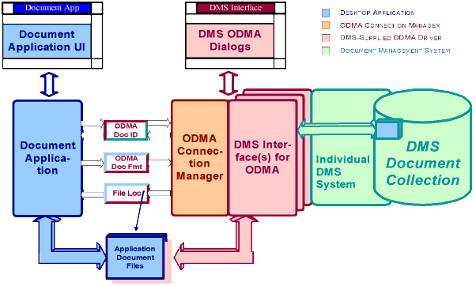

i990501
NuovoDoc
InfoNote
ODMA
- Where's It Going?
Appraisal 0.75
|
|
i990501
NuovoDoc
InfoNote |
0.75 2023-01-06 14:48 -0800 |
- Latest version: The latest document-engineering version of this information is available on the Internet at
<http://NuovoDoc.com/info/1999/05/i990501b.htm>.- This version: 0.75 <http://NuovoDoc.com/info/1999/05/i990501f.htm>. Consult that page for the latest status and for the most-recent electronic copies of the material.
- Next version: 0.90 <http://NuovoDoc.com/info/1999/05/i990501g.htm>. Updates to March, 2006 appraisal.
- Previous version: 0.51 <http://NuovoDoc.com/info/1999/05/i990501e.htm>.
© 1999-2001 NuovoDoc last updated 2001-06-18-14:20 -0700 (pdt) What keeps ODMA interesting, and what will keep it around?
I say that ODMA has done its job and will continue to steadily fulfill that need. Nevertheless, the world is moving to another way of integrating on the desktop and across the enterprise. ODMA will continue to provide a basic structure, although most activity is now on maintaining the work that has already been accomplished.
There are five points addressing the concerns of developers wondering about continued ODMA employment in document applications and in desktop interfaces of:
- ODMA Succeeded
- ODMA is Stable
- ODMA is Becoming Invisible
- ODMA is Limited
- ODMA has a Specialized Future
-- Dennis E. Hamilton
1999 May 10
revised 2000 May 7
2000 August 16
In 1994, ODMA 1.0 established an open, public approach for interoperability and smooth integration between different document-management systems and document applications on the desktop. The central idea: have document applications do as little work as possible to integrate ODMA access along with existing file-system access for documents.
- When an ODMA-aware application is installed on the Microsoft Windows desktop, the user or administrator can set preferences for the ODMA-registered Document Management System (DMS) to use by default with that application.
When an ODMA-aware document application begins to operate, it registers its presence with the ODMA Connection Manager in a single, simple operation. If the Connection Manager is not present, the document application simply operates with the file system as usual. If connection succeeds, the document application will offer DMS access as an option along with file-system access.
- ODMA document identifications are easy to carry and store wherever file names can be used.
There is a simple trick: Every ODMA ID begins with the difficult-to-confuse prefix "
::ODMA\". This is important: An ODMA-aware desktop application can be launched with an ODMA ID, or find an ODMA ID in a document link, and reliably select ODMA access instead of file-system access for operation with the identified document.The application arranges to accept and retain ODMA IDs as easily as it carries file names. When requesting an existing file, applications use the ODMA API whenever an ODMA ID is encountered. When a new document is to be created, the document application offers the option of using ODMA to create a new, managed document, or using the file system to create a file-based document. When an existing document is to be opened, the user has the option of locating a document in the DMS or locating a document in the file system.
- ODMA document applications don't have to be implemented with any assumptions about how a DMS stores files, how it creates documents, how it finds documents, and how it retrieves documents (see figure).
Document applications need only work on files in the file system. To access a document in a DMS, the DMS is given the ODMA ID of the document and identification of the format expected by the application. The DMS delivers the file(s) of the document in a file-system folder that the document application can use.
When the document application completes operating with a document, it informs the DMS via ODMA. The DMS takes the changes from the file-system location to which the document's file was delivered for opening by the application.
The document application doesn't have to implement any interactions with the operator about finding and storing documents in the DMS. The DMS provides all user dialogs that may be needed in order to carry out requests from the document application.
The document applications don't even have to know which DMS is involved in retention and delivery of different documents. The ODMA ID of the document also identifies the DMS, and the ODMA software ensures coordination with the specified DMS.
- ODMA DMS drivers are simple plug-ins on the desk-top computer.
There is one ODMA Connection Manager module and any number of plug-in DMS drivers.
Under Windows, DMS desktop interfaces are installed as simple Microsoft COM objects. They are registered in a way that allows the ODMA Connection Manager to find them.
The ODMA Connection Manager uses a small number of COM-specific operations to activate a DMS for use with an application. The application uses a pure "C Language" interface to reach the ODMA Connection Manager. The application doesn't have to be a COM application or be developed with any awareness of COM.

Figure. ODMA Integration between application and DMS (block diagram) [download Visio version]
The basic ODMA 1.0 functions remain at the sweet spot of 1997's ODMA 2.0. It is easy to see how to employ ODMA as widely as possible:
- Q: What's the easiest way to integrate with as many Document Management Systems as possible?
A: Support an ODMA 1.0-level API for optional operation. Register the desktop application as an ODMA application and use the ODMA interface to bridge to any document-management system the customer wants to use. Whatever other integrations one wants to be known for, ODMA is too simple to pass up.
Use of additional ODMA 2.0 operations achieves smoother operation for many Desktop applications. These can be used when available. Applications should always be designed to treat operations beyond the ODMA 1.0-level as optional and be able to work around their absence.- Q: How can I make is as easy as possible for users of a document-management system to create, submit, retrieve, and update their desktop documents?
A: Provide an ODMA 2.0-level DMS Interface to the document-management system on the desktop. Honor the ODMA document-identification and document-format agreements with the DMS Interface. A DMS that does not support ODMA on the desktop is like an imaging system that does not support TWAIN for integration of scanners and other image sources.
Generic desktop applications that only employ the common, ODMA 1.0-level operations should still be able to operate smoothly with your DMS.
The desktop has moved to component models and to the Internet for distributed integration technologies. ODMA is left behind or submerged in this approach. While ODMA continues to be used, it is disappearing relative to the expansion of two other approaches:
The introduction of Web Folders on Windows 98, and the compatibility of Web Folders with WebDAV as well as FrontPage Extensions and Microsoft Office 2000 Extensions provides a very low-cost, simple model for integration between the desktop and document collections composed of electronic office documents:
- Every existing Windows-compliant application is already Web Folders capable. There is nothing extra that needs to be done to make an application Web Folders aware. Application developers don't have to do anything to accomplish integration compared to what is required now to be ODMA-aware.
- DMS Vendors can employ Web Folders and WebDAV (for example) to deliver access to their capabilities without requiring special support from applications.
- DMS Vendors can improve the user experience by customizing how their DMS is presented via Web Folders, and this then provides a differentiated, quality integration with all desktop applications. This becomes an appealing substitute or supplement to the creation of DMS integrations for ODMA.
- DMS Vendors have improved deployment of their DMS to arbitrary desktops, because WebFolders and WebDAV provide for remote access, allowing the DMS to provide most of its integration on a supported server. This further simplifies deployment and integration in general office settings, since integration with desktops does not require any complex deployment or integration.
The benchmark document application suite -- Microsoft Office -- features application integration using ActiveX, Visual Basic for Applications (VBA), and scripting languages. Java fits too. So does the Web. The application suite is itself componentized for use in customized construction and deployment of enterprise collaborative and document-centered applications. Think of it as the Collaborative Enterprise Desktop of choice.
The Microsoft realization of this desktop capability is part of the Microsoft Distributed Netware Architecture (DNA). The n-tiered application-distribution model of Microsoft DNA is shared by all current enterprise application architectures: Delivery of documents to and from the desktop is as component objects, containers, and object-oriented sequences of results. ODMA support is an incidental factor in this far-reaching object-oriented, distributed model. When ODMA is accommodated at all, it is secondary, submerged functionality.
- Q: You mean I shouldn't bother with ODMA?
A: No, that's not it. The straightforward, simple ODMA interface provides easy access to a variety of DMS implementations at very low cost. ODMA support by a DMS provides integration with document applications that have not, will not, or can not be moved to the Microsoft Office suite model.
- Q: Well, can I have ODMA as my only desktop integration solution for document applications and DMS interfaces?
A: That just doesn't look like enough for Windows applications any more. Don't ignore the synergies of desktop componentization, enterprise customization, and distributed application available in the Microsoft Office and Windows approach. Having your product interplay smoothly with everything else that fits now and that will be there later is a very rich place to position products and solutions. My unreliable sources tell me that there are tens of thousands of developers using Microsoft Office for building custom solutions. I don't know what fraction of them are operating at the VBA integration level, but don't you want every one of them working on your side and integrating your product?
- Q: This seems too complicated. For a small, struggling software company, how can we do both?
A: (sigh) However it looks now, what will change to make it easier later?
Another way to put it is that ODMA "ODMA doesn't have legs." I don't know how to say this better. ODMA does not seem to scale very far beyond its integration sweet spot. The point of diminishing returns arrives quickly. It seems to me that the ODMA API boundary is situated at an optimal point from which there is no exit that preserves ODMA simplicity.
In many ways, ODMA is very restricted. It was meant to be. The ODMA API was not designed for client-server operation or working with "standard" COM objects. ODMA is highly-attuned to what is required on a desktop system. It's greatest success, and all of the integration model, is specific to Windows running on a single computer.
- Q: What do you mean, not designed for client-server operation?
A: Well, it is this kind of thing:
- The ODMA ID is a string in an 8-bit code that depends on the code page of the desktop system, making it difficult to export and transfer faithfully across enterprises and among international communities
- The transfer of string data has not been upgraded to Unicode, creating problems integrating desktop applications on Windows NT, Windows 2000, and later releases.
- The physical format of heavily-used string data and its transfer across the ODMA API is not a format easily used by COM objects, Visual Basic, or Java and it doesn't transfer on networks well
- The transfer of files between applications and a DMS requires that the DMS have access to and create data in a file system that the application can also use
.- Q: (Petulantly) Well, doesn't DMA suffer from some of these same limitations?
A: Perhaps. What difference does that make here?
- Q: Can't a DMS compensate for a lot of this?
A: Yes it can. And it is valuable to do so, providing distribution on the DMS side of the ODMA API and integration boundary. This is the common way that a DMS provides client-server operation: In the DMS driver on the desktop. This means that DMS drivers must be deployed to all desktops and configured for operation on each one. Sometimes, one can substitute a generic DMS driver that accesses provides client-server or Internet operation. This has been done using DMA repositories and WebDAV repositories. Generic DMS drivers are a big help, but they still must be deployed and configured for each desktop.
What's left for ODMA?
ODMA remains an ideal mechanism for delivering custom integrations of special-purpose DMS services through conventional desktop applications. So long as important desktop applications continue to be ODMA-aware, there is an opportunity for low-cost integration of custom, dedicated DMS applications. Even when the ultimate objective is integration in an n-tier distributed-object architecture, ODMA provides a low cost of initial entry and reduced learning curve for some important initial benefits. It is also appropriate where the distributed-object architecture of desktop applications is immature or impractical.
There are some simple steps to extend the life of the ODMA API:
- Simple repairs. Remedy the defects that interfere with cross-platform and heterogeneous operation between document applications and the DMS.
- Give ODMA a genuine COM interface. Yes, really. Derive a clean COM API for use by document applications. This also allows extension above the ODMA API to deliver components into n-tiered Windows DNA operations.
- Isolate Platform Dependencies. The current integration model for the ODMA Connection Manager and plug-in of DMS Interfaces is snarled up in Windows dependencies. Make a version that isolates platform dependencies and can be ported to other platforms such as Linux. Stay friendly to Windows on Windows. Just make it easier to have document management systems support equivalent document applications on other platforms.
- Q: Will it matter?
- A: Maybe not. ODMA has been a volunteer project all along. It provided something that everyone could benefit from and that wasn't worth developing and perpetuating as a proprietary solution. It matters whether the volunteer community has moved its attentions elsewhere or whether there is seen to be enough further benefit to be gained by raising the level of interoperability in ODMA.

|
You are navigating NuovoDoc |
created 1999-05-10-10:00 -0700 (pdt) by
orcmid |